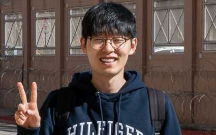
Hello! My name is Hankyul Kang.I am Hankyul Kang, a Ph.D. candidate in the Department of Artificial Intelligence at Ajou University in Suwon, Korea, where I am advised by Prof. Jongbin Ryu in the Multi-Modal Artificial Intelligence Lab. I joined the lab in January 2021 as an undergraduate researcher and have stayed there since, moving into the doctoral program in March 2022.
I am interested in advancing the frontiers of state-of-the-art algorithms to achieve breakthrough performance. My expertise lies in improving efficiency through architectures, compression, and learning algorithms for vision models and large language models. My work spans four directions:
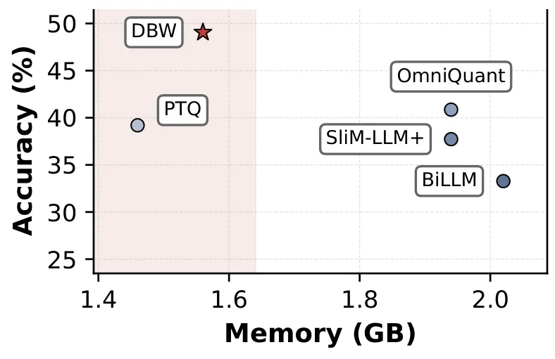
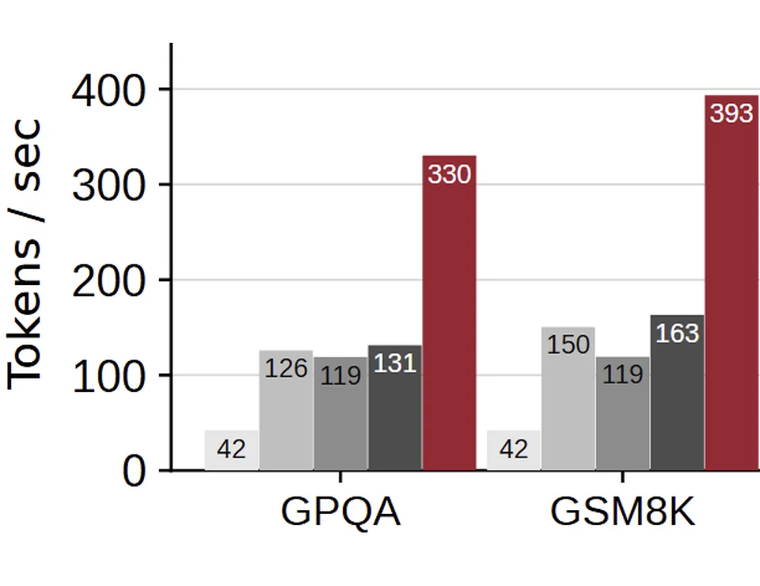
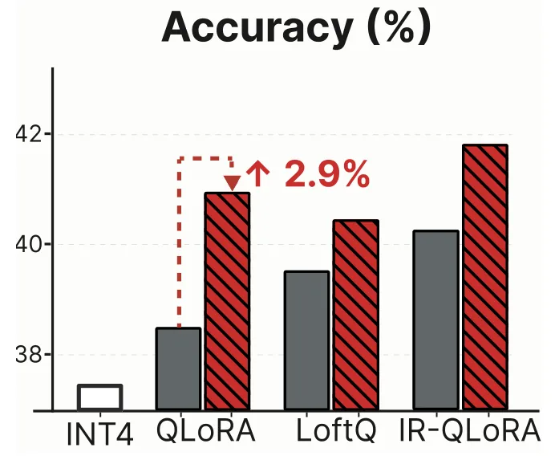
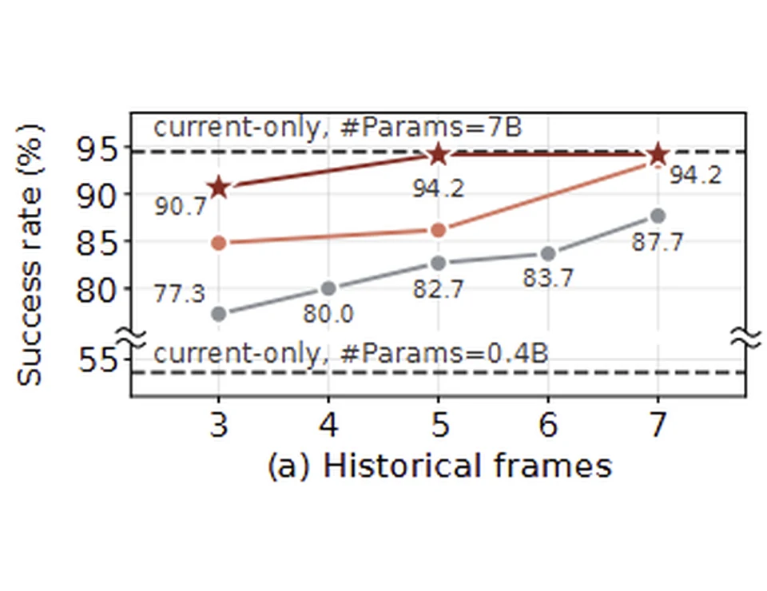
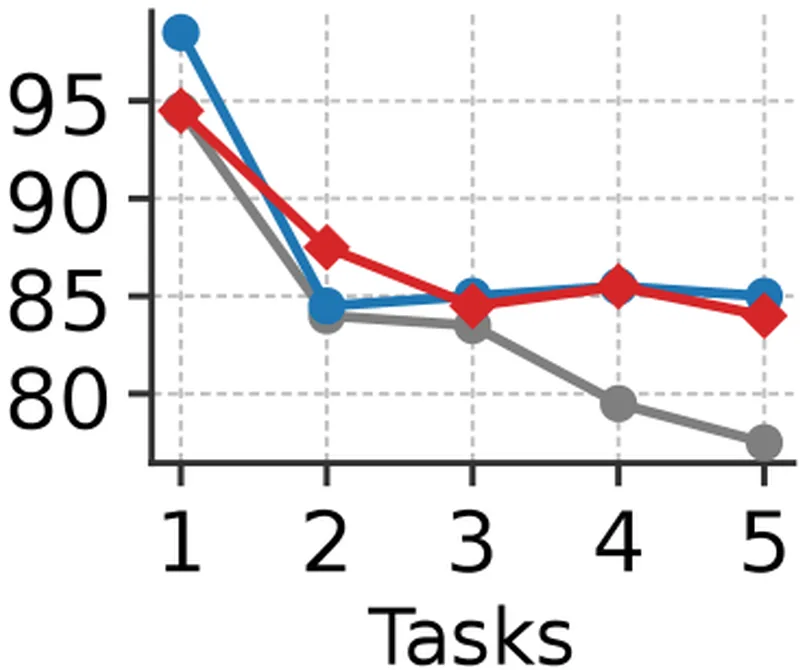
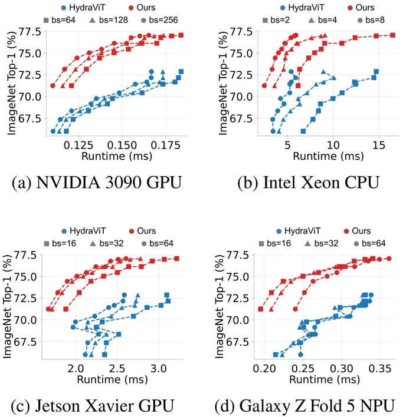
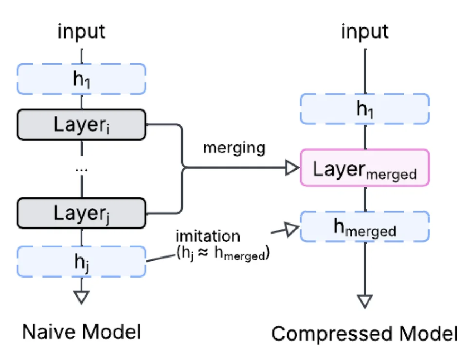
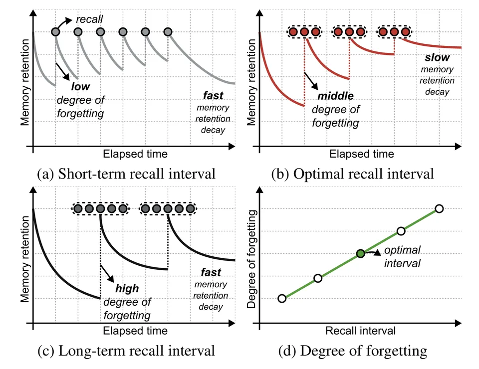
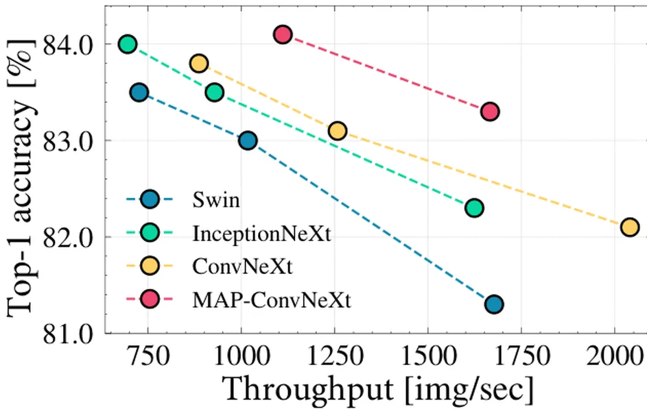
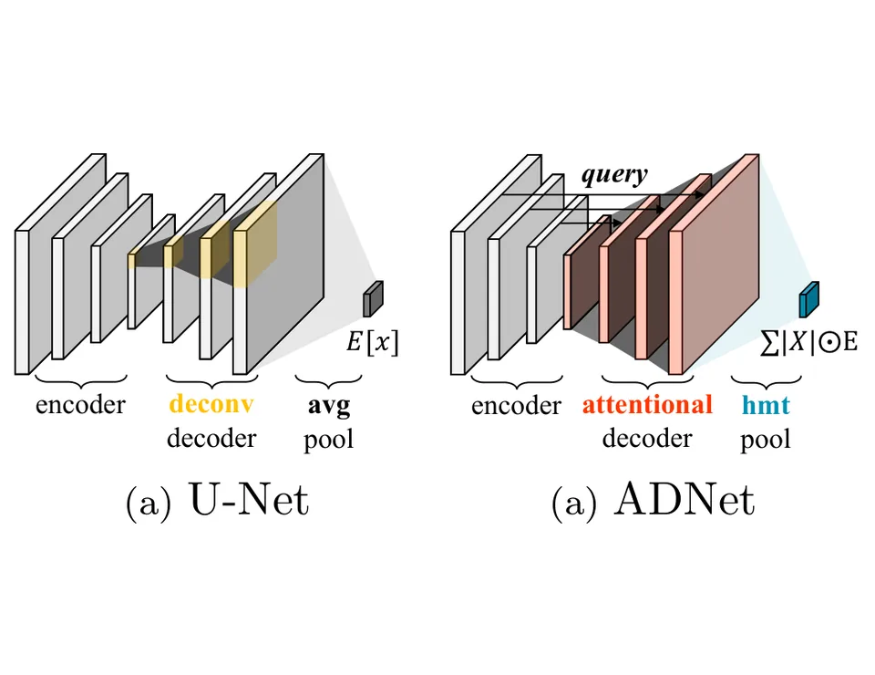
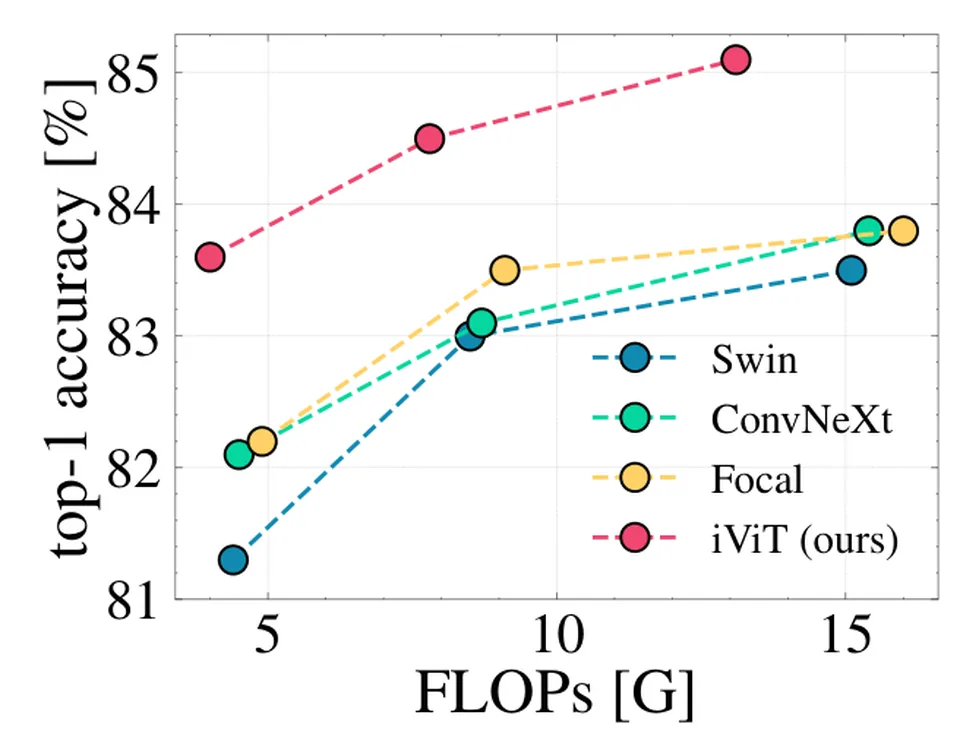
Reviewer: CVPR · ECCV · NeurIPS · BMVC